patient_prognosis <-
get_prognosis(gender = "Male",
age = 45,
comorbidities = c("diabetes", "hypertension")
)Introduction to R for
Health Data Science
Hands-on training
Carlos Matos // ISPUP // November 2023
Welcome!
Language
- What language do we use ?


Checkpoint
Open RStudio!
Check R version
R version 4.3.2 (2023-10-31 ucrt)
Platform: x86_64-w64-mingw32/x64 (64-bit)
Running under: Windows 10 x64 (build 19045)
Matrix products: default
locale:
[1] LC_COLLATE=English_United States.utf8
[2] LC_CTYPE=English_United States.utf8
[3] LC_MONETARY=English_United States.utf8
[4] LC_NUMERIC=C
[5] LC_TIME=English_United States.utf8
time zone: Europe/Lisbon
tzcode source: internal
attached base packages:
[1] stats graphics grDevices utils datasets methods base
other attached packages:
[1] lubridate_1.9.3 forcats_1.0.0 stringr_1.5.1 dplyr_1.1.4
[5] purrr_1.0.2 readr_2.1.4 tidyr_1.3.0 tibble_3.2.1
[9] ggplot2_3.4.4 tidyverse_2.0.0
loaded via a namespace (and not attached):
[1] gtable_0.3.4 jsonlite_1.8.7 compiler_4.3.2 tidyselect_1.2.0
[5] systemfonts_1.0.5 scales_1.2.1 textshaping_0.3.7 yaml_2.3.7
[9] fastmap_1.1.1 R6_2.5.1 generics_0.1.3 knitr_1.45
[13] munsell_0.5.0 pillar_1.9.0 tzdb_0.4.0 rlang_1.1.1
[17] utf8_1.2.4 stringi_1.8.1 xfun_0.41 timechange_0.2.0
[21] cli_3.6.1 withr_2.5.2 magrittr_2.0.3 digest_0.6.33
[25] grid_4.3.2 rstudioapi_0.15.0 hms_1.1.3 lifecycle_1.0.4
[29] vctrs_0.6.4 evaluate_0.23 glue_1.6.2 ragg_1.2.6
[33] fansi_1.0.5 colorspace_2.1-0 rmarkdown_2.25 tools_4.3.2
[37] pkgconfig_2.0.3 htmltools_0.5.7 Packages
- List of packages that we will be using throughout the course
- Copy the code below to RStudio and run
How I have used R
- Public Health Medical Doctor @ Public Health Department
- Started using R during the COVID-19 pandemic
- Epicurves
COVID-19 epicurve. Dates and counts are omitted for anonimity
How I have used R
- Public Health Medical Doctor @ Public Health Department
- Started using R during the COVID-19 pandemic
- Epicurves
- Forecasting
- Automating procedures
Covid case number forecasts by reporting date. Dates and counts are omitted for anonimity
How I have used R
- Population health needs assessment of the Portuguese National Health Plan
- Mortality forecasting
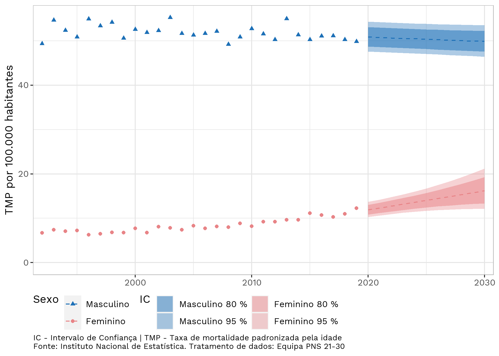
How I have used R
- Population health needs assessment of the Portuguese National Health Plan
- Mortality forecasting
- Notifiable diseases
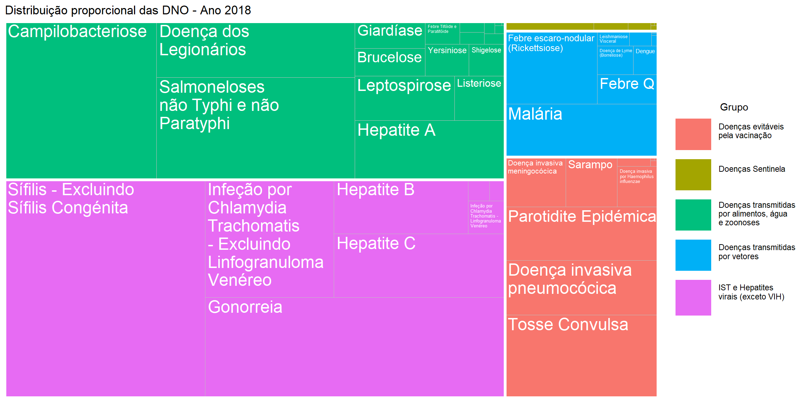
How I have used R
- Population health needs assessment of the Portuguese National Health Plan
- Mortality forecasting
- Notifiable diseases
- Hospital morbidity
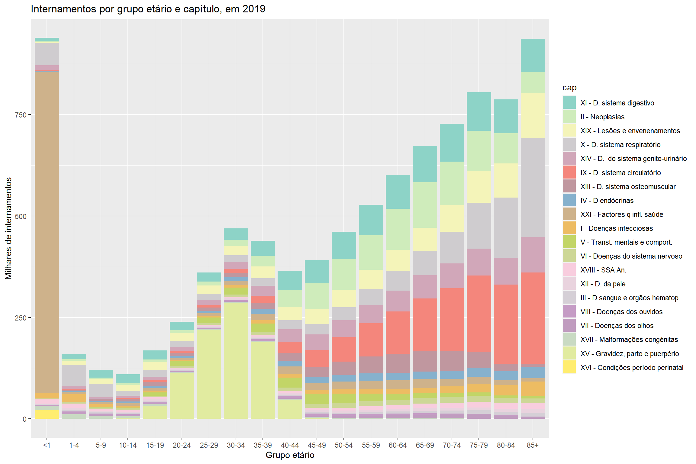
How I have used R
- Data analysis
- Deaths attributable to Covid, Influenza and extreme temperatures
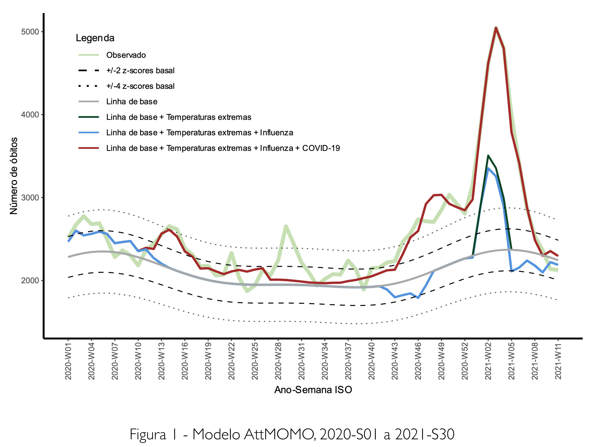
How I have used R
- Data analysis
- Deaths attributable to Covid, Influenza and extreme temperatures
- Developed the ineptR package to facilitate and automate data extraction from Statistics Portugal with R

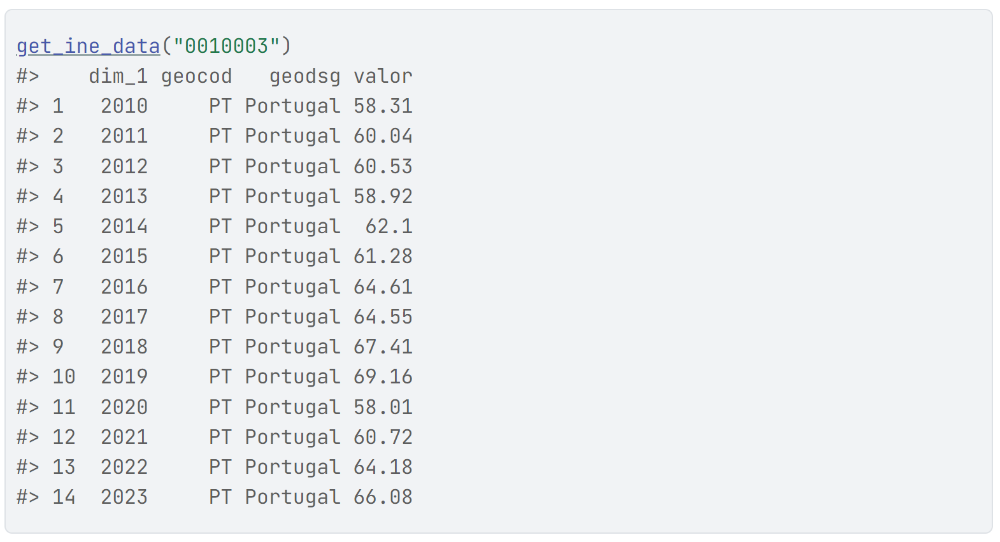
How I have used R
- Now working on improving dataviz skills and portfolio…


Goals
Goals for this course
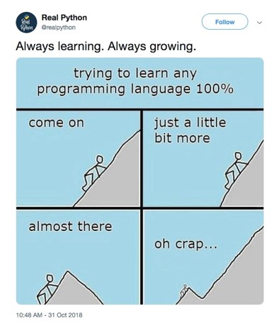
- Be a learning catalyst
- Know what R is capable of
- Learn how to search the web for answers
- Gain a solid understanding of data wrangling with the tidyverse
- Learn the syntax of statistical models in R
- Be empowered to create and edit charts with ggplot
Goals for this course
- Communicate your results
- Static reports
- Dynamic dashboards
- Reproducible research and collaboration with version control
- A first step in the migration from other software!
Methods
- Many worked examples
- Assuming no prior knowledge
- Start simple and increasing complexity over time
- Minimize redundancy
- R has many ways to achieve the same results. Choose one and stick to it.
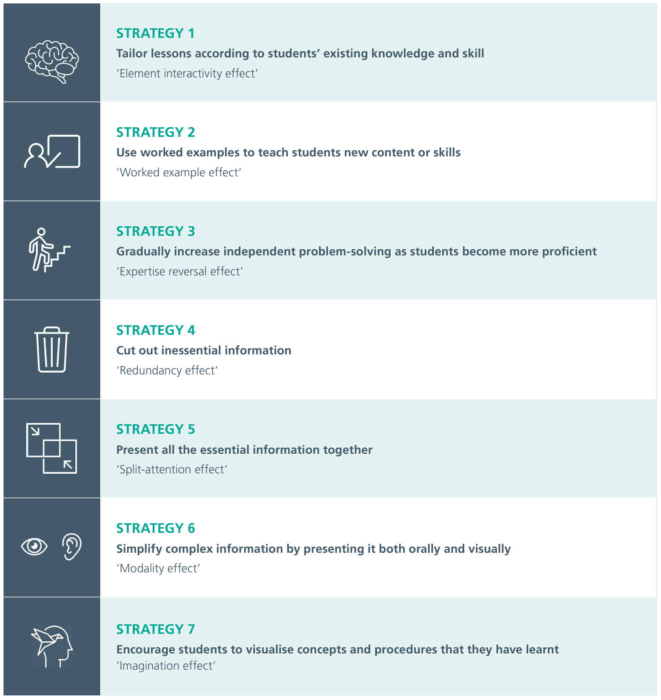
Methods
- We will be working side by side in R
- Slides are available on the course website
- You can copy the code from the code chunks and paste in R
- I recommend that you use this approach as a last resort
- It’s better if you write the code manually, to get a feel for shortcuts, code completion, bracket auto-closing and other RStudio qualtiy of life features
Before we go into R…
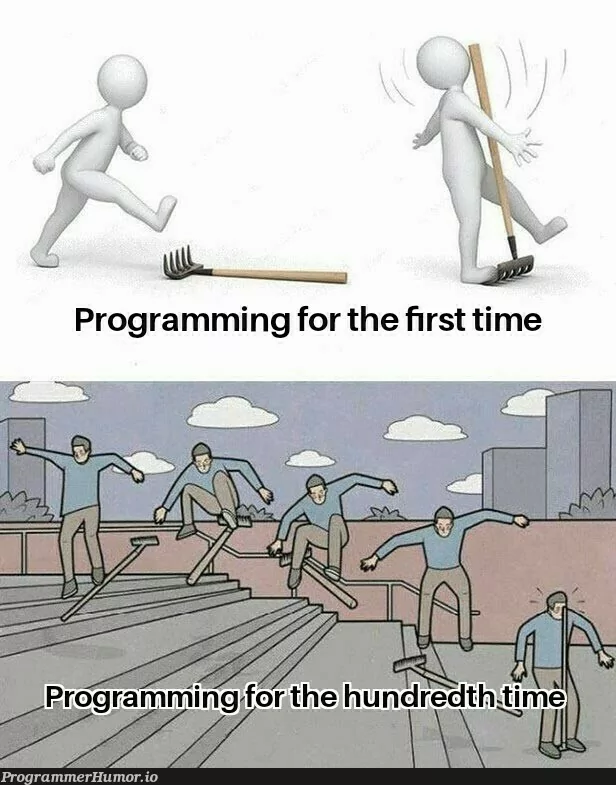

Before we go into R…
Intro to R
Why R?
- Free and Open Source
- Workflow and analysis reproducibility
- Community engagement
- Pretty much all your future questions are already answered online
- You just need to ask the right questions
- Certain level of complexity
- BUT, tidyverse makes it way more approachable
RStudio
R and RStudio
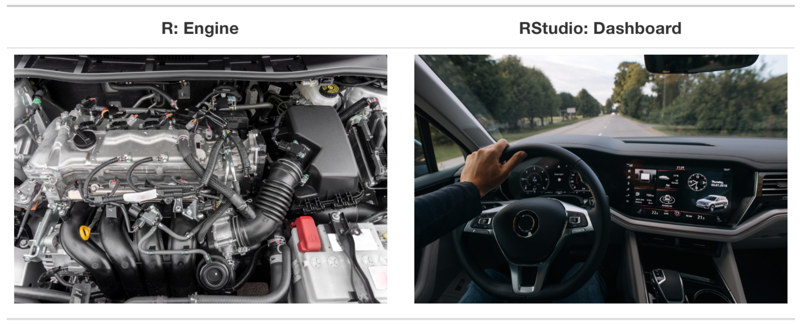R vs RStudio
RStudio
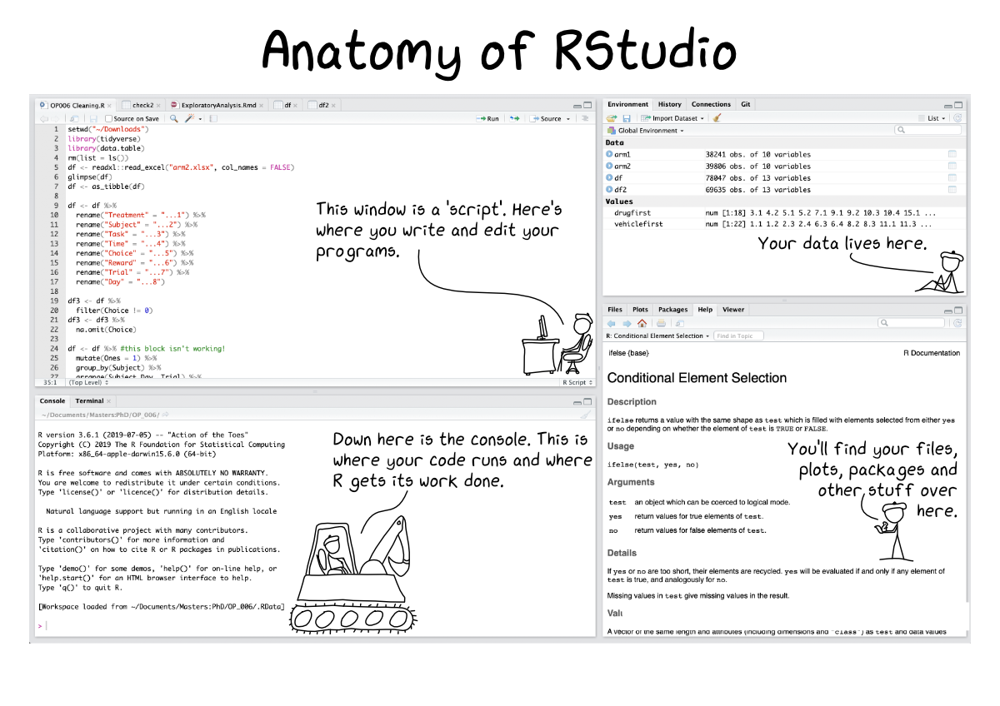Anatomy of RStudio
Frequently used shortcuts
- For future reference
Escto interrupt current executionAlt/Option+-to insert<-(assign operator)Ctrl/Cmd+Shift+mto insert%>%(pipe)Ctrl/Cmd+Enterto run current line/selection of codeCtrl/Cmd+fto find and replace in current script
Useful functionalities
F1or?for helpTABfor autocomplete- Plot auto preview in Plots pane
UPandDOWNfor history tracking- Parenthesis/brackets autoclose and highlight
Good vs bad code
The single most important thing to remember
COMMENT YOUR CODE!
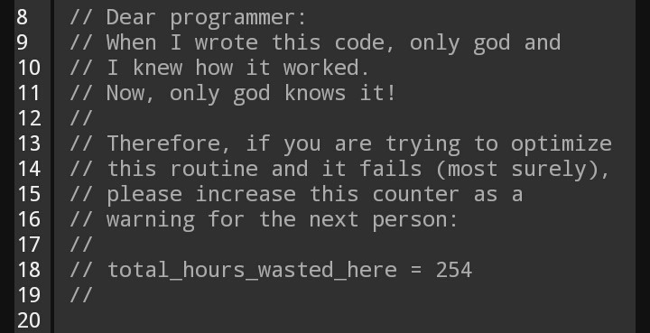
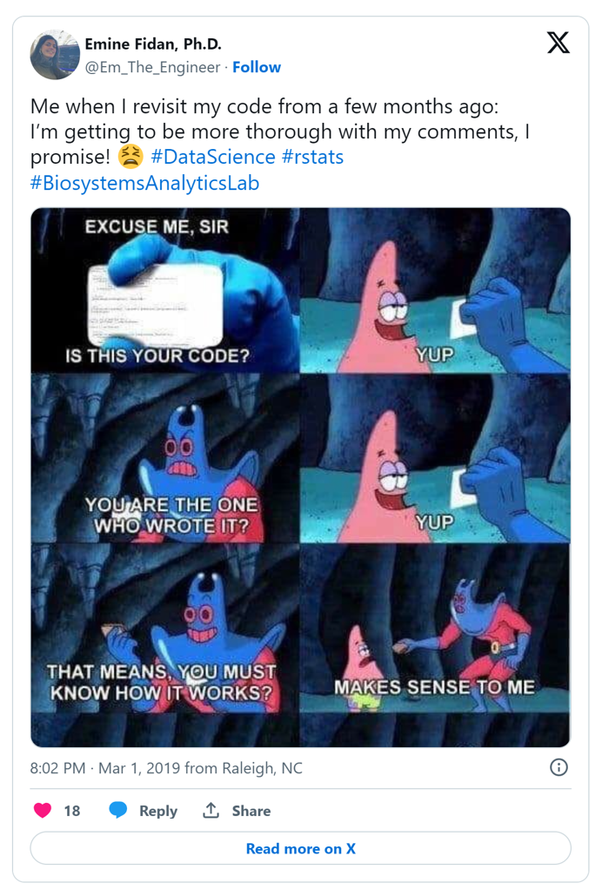
Key concepts
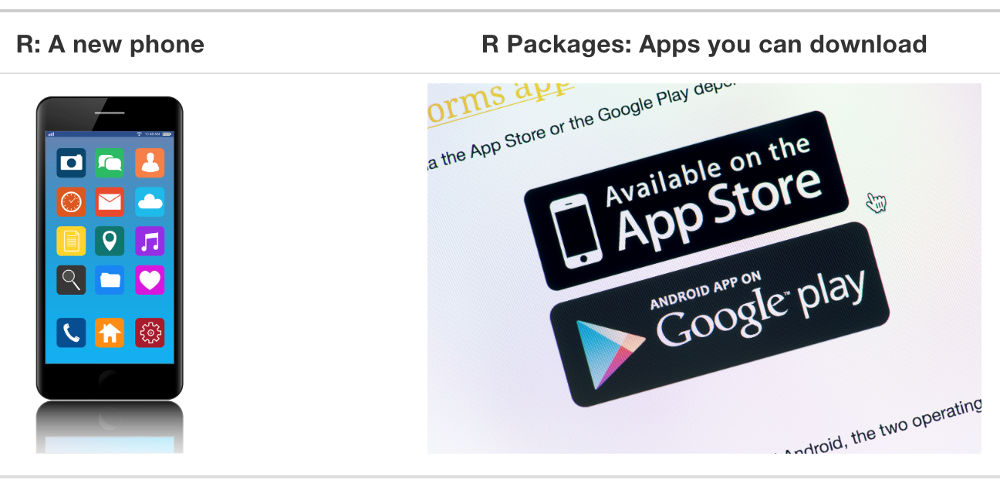R vs R Packages
Objects - Everything we store in R. Can be variables, datasets, graphs, etc. Objetcs are assigned a name, which can be referenced in later commands
Functions - A function is a code operation that accept inputs and returns a transformed output. Read more in the Functions section. The basic unit of a package.
Packages - A bundle of functions that can be shared.
Scripts - A document/file that stores a set of commands.
Packages
- Packages can be downloaded and installed locally with
install.packages("package") - Once installed, the package is stored in your library
- To use the package in the current session, we need to load the package with
library(package)- Needs to happen in each session
- Packages are more frequently installed from
- CRAN (Comprehensive R Archive Network)
- GitHub
- Update a package in the packages pane, in RStudio
Functions
- Consider the following code that calls the ficticious function
get_prognosis(), to get the prognosis of a patient:
- We are calling the function
get_prognosis()with 3 arguments (gender, age, and comorbidities), and storing the resulting calculation in an object calledpatient_prognosis.
Working with data
Data types
- String or character
- Number (integer or double)
- Logical
Strings or Characters
- Surrounded by double
"or single'quotes
[1] "abc"[1] "character"[1] "1"- Some operations are not available with strings
Numbers
Integers
- Can be of type integer or double
- integer comes with the letter
Lright after the number
[1] "double"[1] "integer"[1] 3.5- Integers are more relevant for low level programming, not very much for our use cases. We will always use doubles
Numbers
Double / Numeric
- In most cases numbers will be stored as double
- Used to represent any real number
Logicals
- Very frequently used for conditional logic (
if elsestatements) - We will use then inside tidyverse functions
Type coercion
- We can (and very much want to!) convert some data to other types
- e.g. we import a dataset with a character column (e.g. outcome: “dead” or “alive”) that we want to convert to 0’s and 1’s for logistic regression
- R has functions with syntax
as.something(), that allow conversion of some types into others
Type coercion
- We can (and very much want to!) convert some data to other types
- e.g. we import a dataset with a character column (e.g. outcome: “dead” or “alive”) that we want to convert to 0’s and 1’s for logistic regression
- R has functions with syntax
as.something(), that allow conversion of some types into others
Warning: NAs introduced by coercion[1] NAImportant
When converting to other data types, sometimes NAs might be introduced if some error is detected. Those values get lost.
Data structures
- values
- vectors
Data structures
- lists
[[1]]
[1] "A"
[[2]]
[1] 1
[[3]]
[1] TRUE FALSE- data frames
id name
1 1 Jon
2 2 Tyrion
3 3 Arya- Matrices, arrays
Values
- The simplest data structures
- Can be of any type
Vectors
- Set of values of the same data type
- They are created with the concatenate function
c()
[1] TRUE FALSE FALSE TRUE [1] 1 2 3 4 5 6 7 8 9 10 [1] 1.5 2.5 3.5 4.5 5.5 6.5 7.5 8.5 9.5 10.5[1] "a" "b" "c" "d"Vectors
R is a language built around vectors!
Type coercion
Warning
Beware of automatic type coercion when creating vectors or, more often, importing data!
years_vector <- c(2020,2021,"202a2",2023)
typeof(years_vector) #We expected 'integer' but got 'character', because one year had a typo[1] "character"#Let's convert the vector to integer:
as.integer(years_vector) #the year with a typo was converted to NA because R couldn't figure out what we wanted[1] 2020 2021 NA 2023Vectors
Type coercion
A vector with different data types in some elements will automatically be coerced to a data type of higher complexity
flowchart LR A(Logical) --> B(Integer) B --> C(Numeric) C --> D(Character)
Vectors
- Vector elements can have names
- Name can be given when creating the vector, or at a later stage
Exploring vectors
Let’s look at the long vector we created earlier:
[1] 0.0 0.1 0.2 0.3 0.4 0.5 0.6 0.7 0.8 0.9 1.0 1.1 1.2 1.3 1.4
[16] 1.5 1.6 1.7 1.8 1.9 2.0 2.1 2.2 2.3 2.4 2.5 2.6 2.7 2.8 2.9
[31] 3.0 3.1 3.2 3.3 3.4 3.5 3.6 3.7 3.8 3.9 4.0 4.1 4.2 4.3 4.4
[46] 4.5 4.6 4.7 4.8 4.9 5.0 5.1 5.2 5.3 5.4 5.5 5.6 5.7 5.8 5.9
[61] 6.0 6.1 6.2 6.3 6.4 6.5 6.6 6.7 6.8 6.9 7.0 7.1 7.2 7.3 7.4
[76] 7.5 7.6 7.7 7.8 7.9 8.0 8.1 8.2 8.3 8.4 8.5 8.6 8.7 8.8 8.9
[91] 9.0 9.1 9.2 9.3 9.4 9.5 9.6 9.7 9.8 9.9 10.0What if we wanted to look only at some data points?
Exploring vectors
let’s look at the long vector we created earlier:
[1] 0.0 0.1 0.2 0.3 0.4 0.5 0.6 0.7 0.8 0.9 1.0 1.1 1.2 1.3 1.4
[16] 1.5 1.6 1.7 1.8 1.9 2.0 2.1 2.2 2.3 2.4 2.5 2.6 2.7 2.8 2.9
[31] 3.0 3.1 3.2 3.3 3.4 3.5 3.6 3.7 3.8 3.9 4.0 4.1 4.2 4.3 4.4
[46] 4.5 4.6 4.7 4.8 4.9 5.0 5.1 5.2 5.3 5.4 5.5 5.6 5.7 5.8 5.9
[61] 6.0 6.1 6.2 6.3 6.4 6.5 6.6 6.7 6.8 6.9 7.0 7.1 7.2 7.3 7.4
[76] 7.5 7.6 7.7 7.8 7.9 8.0 8.1 8.2 8.3 8.4 8.5 8.6 8.7 8.8 8.9
[91] 9.0 9.1 9.2 9.3 9.4 9.5 9.6 9.7 9.8 9.9 10.0We can also look at specific sections/positions/indices using [] brackets
Exploring vectors
Or look at all except some indices with the minus - sign
Exploring vectors
- Vector elements can be accesses by the name given to each index
Exploring vectors
- Vector elements can be accesses using a logical expression
Exploring vectors
[1] 10 33 4 9 2[1] 10 33 NA 9 NA[1] NA NANote
! is the not/negation operator. It transform TRUE to FALSE and vice-versa
Note
NAs are returned when evaluating equality or inequality:
== (‘equal to’ operator), != (not equal to), > (greather), < (smaller), >= (greather or equal ), <= (smaller or equal)
Modifying vectors
It’s possible to reassign values to a specified index of an existing vector
#assign the value "z" to the first position of the "character_vector"
character_vector[1] <- "z"
character_vector[1] "z" "b" "c" "d" "e" "f"#assign the values "four" and "five" to the 4th and 5th positions of the "character_vector"
character_vector[4:5] <- c("four","five")
character_vector[1] "z" "b" "c" "four" "five" "f" This approach can be used to add data to a vector
Lists
- Are the more comprehensive object type
- Can contain (almost) anything
- Can be created with the function
list(), similarly toc()for vectors - Lists are ordered, just like vectors
[[1]]
[1] 1 2 3
[[2]]
[1] "R"
[[3]]
[[3]][[1]]
[1] 1 2 3What differences do you see between the 1st and 3rd elements of the list? Shouldn’t they be the same?
Exploring lists
- Lists can be tricky
???????
Exploring lists
- Lists can be tricky
- A list can be accessed with single
[or double[[brackets. [Returns a smaller list, while[[returns the contents of the that smaller list.- Usually we want
[[.
Exploring lists
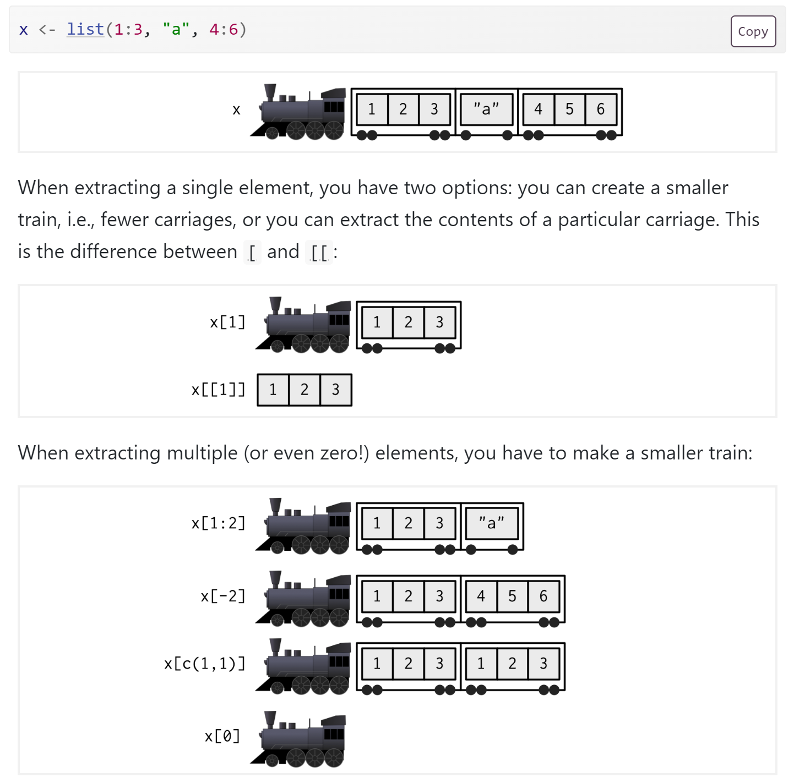Exploring lists
- List elements can be named, just like vector elements
Exploring lists
- Lists can be accessed by name with
$ $works like[[
Important
This behaviour is very relevant for our use cases, because data frames also behave the same way with column names!
Modifying lists
Lists
[[1]]
[1] 1 2 3
[[2]]
[1] "R"
[[3]]
[[3]][[1]]
[1] 1 2 3
[[1]]
[1] "A"
[[2]]
[1] "R"
[[3]]
[[3]][[1]]
[1] "1" "nested_modification" "3" How much are we going to work directly with lists in this course?
Pretty much zero…
But we need to know how they work, because some outputs are lists (notably, outputs of statistical models), and we may want to grab some values from those lists (e.g. a p-value from a linear regression model)
Data frames
- A 2D object (aka, a table…)
- You can think of it as a more rigorous Excel spreadsheet
- Unquestionably the most useful storage structure for data analysis
- Each column/variable is a vector
- Each column ALWAYS has the same type (contrary to Excel, where errors may occur)

Exploring data frames
- Vectors and lists are 1D objects, therefore inside
[]we only need to specify an index. - Dataframes are 2D, meaning that we need to specify 2 dimensions inside
[]: rows and columnsdf[rows, cols]selects a single valuedf[rows, ]selects some rows, all columnsdf[,cols]selects all rows, some columns
Exploring data frames
Exploring data frames
Data frames vs tibbles
- A tibble is the tidyverse version of a data frame
- Very similar, with some qualtiy of life improvements
- Main differences
- Tibbles don’t print all rows for large data frames, only first 10
- Stricter subsetting (need to specify entire correct name of variable, no abbreviations)
- Less prone to errors (converting variable types by mistake)
Modifying data frames
Note
I will henceforth use data frame and tibble interchangeably, unless otherwise specified, but we will be working with tibbles.
Note
Keep in mind that all the ways to access vectors and lists that we have seen before (e.g. using vectors, sequences or logical expressions to subset) also work with data frames, with the appropriate adaptations to 2D space
Modifying data frames
- Adding a column to a data frame
df <- tibble(col1 = c("A","B","C"),
col2 = c(1,2,3),
col3 = c(TRUE, FALSE, TRUE))
#Add a new variable to the tibble
df$my_awesome_new_col <- c("Awe-","wait for it","-some!")
df# A tibble: 3 × 4
col1 col2 col3 my_awesome_new_col
<chr> <dbl> <lgl> <chr>
1 A 1 TRUE Awe-
2 B 2 FALSE wait for it
3 C 3 TRUE -some! Important
The new column must have the same number of rows as the existing data frame, or you will get an error.
Modifying data frames
Error in `[<-`:
! Assigned data `"some_character"` must be compatible with existing
data.
ℹ Error occurred for column `col2`.
Caused by error in `vec_assign()`:
! Can't convert <character> to <double>.- We get an error because we are trying to assign a character value to a numeric vector (col2).
Note
With data.frame() instead of tibble(), automatic conversion to character would occur, which is usually not the desired result. This type of conversions is prone to cause errors in your code, particularly if you use new data with substandard quality.
Exercises
Carlos Matos // ISPUP::R4HEADS(2023)